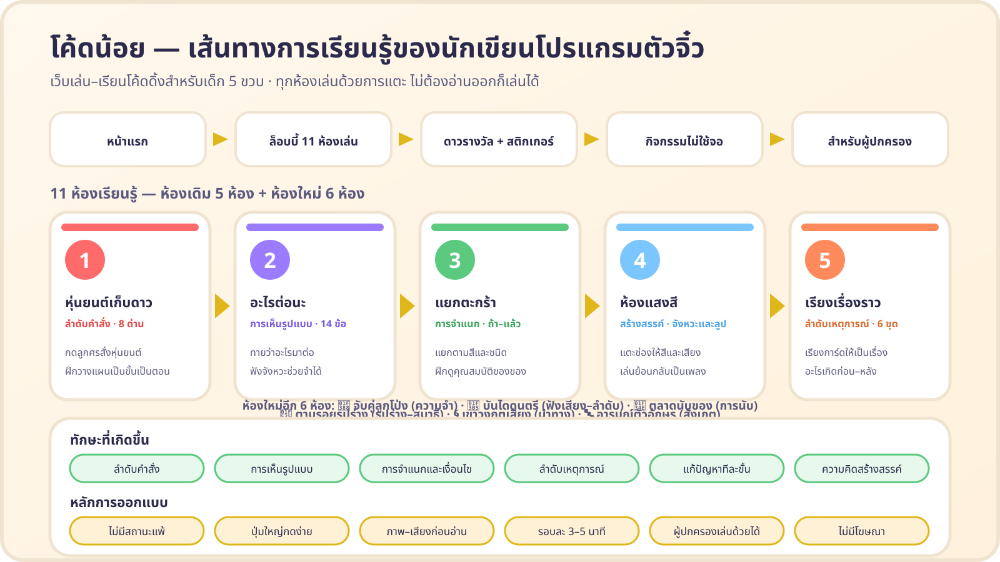

เด็ก 5 ขวบ “เรียนโค้ด” ได้จริงหรือ?
ได้ แต่ไม่ใช่การพิมพ์โค้ด สิ่งที่เด็กวัยนี้พร้อมที่สุดคือ การคิดเป็นลำดับขั้น, การมองเห็นรูปแบบ และ การตัดสินใจตามเงื่อนไขง่าย ๆ ซึ่งเป็นรากฐานของความคิดเชิงคำนวณ (Computational Thinking) ทั้งหมดนี้ฝึกได้ผ่านการเล่นที่สนุกและไม่กดดัน
แต่ละห้องสอนอะไร
ตารางนี้ใช้ดูว่ากิจกรรมหนึ่ง ๆ กำลังฝึกทักษะอะไร และควรชวนคุยอย่างไร
| ห้อง | แนวคิดเบื้องหลัง | พฤติกรรมที่สังเกตได้ | คำถามชวนคิด |
|---|---|---|---|
| 🤖 หุ่นยนต์เก็บดาว ลำดับคำสั่ง |
การเรียงลำดับคำสั่ง (Sequencing) และการคาดการณ์ผลลัพธ์ก่อนลงมือทำ | เด็กแตะลูกศรหลายปุ่มก่อน แล้วค่อยกด “ลองเลย” — เป็นการวางแผนล่วงหน้าครั้งแรก ๆ | “ถ้าเปลี่ยนปุ่มนี้ หุ่นยนต์จะไปถึงดาวไหมนะ” |
| 🎯 อะไรต่อนะ การเห็นรูปแบบ |
การมองเห็นและจดจำรูปแบบซ้ำ (Pattern Recognition) — ฐานของลูปและการคาดการณ์ | เด็กเริ่มพูดออกเสียงเป็นจังหวะ เช่น “แดง น้ำเงิน แดง น้ำเงิน” ก่อนเลือกคำตอบ | “หนูเห็นอะไรซ้ำ ๆ บ้าง จังหวะมันเป็นยังไง” |
| 🧺 แยกตะกร้า การจำแนก · เงื่อนไข |
การจำแนกตามคุณสมบัติ (Classification) และโครงสร้าง “ถ้า…แล้ว…” (Conditional) | เด็กมองสีของของก่อน แล้วจึงเลือกตะกร้า — เป็นการตัดสินใจตามเงื่อนไขทีละขั้น | “ทำไมชิ้นนี้ถึงต้องอยู่ตะกร้าสีนี้” |
| 🎨 ห้องแสงสี สร้างสรรค์ · จังหวะและลูป |
การสร้างผลงานจากลำดับการกระทำ และการเล่นซ้ำลำดับเดิม (Loop) โหมดทำตามแบบฝึกความจำระยะสั้น | เด็กแตะช่องซ้ำ ๆ เพื่อฟังเสียงเดิม เรียงสีเป็นจังหวะ หรือเก็บภาพผลงานไว้ในแกลเลอรี — เป็นการทดลองแบบนักประดิษฐ์ | “ถ้าเล่นซ้ำอีกครั้ง เสียงจะเหมือนเดิมไหม” |
| 📚 เรียงเรื่องราว ลำดับเหตุการณ์ |
การเรียงเหตุการณ์จากก่อนไปหลัง — โปรแกรมก็คือลำดับขั้นที่เรียงถูกที่ | เด็กเริ่มใช้คำว่า “ก่อนอื่น… แล้ว… สุดท้าย…” ในการเล่าเรื่องของตัวเอง | “ถ้าสลับการ์ดสองใบนี้ เรื่องยังเข้าใจได้ไหม” |
| 🎈 จับคู่ลูกโป่ง ความจำ · การจับคู่ |
ความจำระยะสั้น (Working Memory) และการเปรียบเทียบสองสิ่งว่าเหมือนหรือต่าง | เด็กจำตำแหน่งการ์ดแล้วพลิกกลับมาหาคู่ — เริ่มวางแผนว่าต้องเปิดใบไหนต่อไป | “ใบที่เห็นเมื่อกี้อยู่ตรงไหนนะ” |
| 🎵 บันไดดนตรี ฟังเสียง · ลำดับ |
ความจำเชิงเสียง (Auditory Memory) และการทำซ้ำลำดับที่ได้ยิน | เด็กฟังทำนองสั้น ๆ แล้วแตะซ้ำจากต่ำไปสูงตามที่ได้ยิน | “เสียงนี้อยู่ตรงไหนของบันได” |
| 🍎 ตลาดนับของ การนับ · จำนวน |
การนับแบบหนึ่งต่อหนึ่ง (One-to-one Correspondence) และความหมายของจำนวน | เด็กชี้ของทีละชิ้นพร้อมนับออกเสียง แล้วเลือกตัวเลขที่ตรง | “ลองชี้นับทีละชิ้นดูสิ ได้เท่าไหร่” |
| 🔵 ตามรอยรูปร่าง รูปร่าง · รูปแบบ |
การเห็นรูปแบบ (Pattern) ร่วมกับการรู้จักรูปเรขาคณิตพื้นฐาน | เด็กดูแถวรูปร่างที่เรียงซ้ำ แล้วคาดเดารูปที่หายไปในช่อง “?” | “รูปร่างไหนที่ซ้ำกันเป็นจังหวะ” |
| 🌀 เขาวงกตเสียง นำทาง · การวางแผน |
การวางแผนเส้นทางทีละขั้น (Planning) และการมองภาพรวมของพื้นที่ | เด็กคิดก่อนเดินว่า “ขึ้นแล้วขวา จะชนกำแพงไหม” ก่อนกดลูกศร | “ถ้าเดินขึ้นก่อนแล้วขวา จะไปต่อได้ไหม” |
| 🔤 อารมณ์ตัวอักษร ตัวอักษร · สังเกต |
การแยกแยะรูปทรงตัวอักษรที่ใกล้เคียงกัน (Visual Discrimination) | เด็กเทียบตัวอักษรทีละตัว เพื่อหาตัวที่ต่างจากเพื่อน — ฐานสำคัญของการอ่าน | “ตัวนี้กับตัวนั้นต่างกันตรงไหน” |
เส้นทางการเล่นและทักษะที่ต่อยอด

↔ ภาพใหญ่นิดหน่อย เลื่อนซ้าย–ขวาดูได้
แนวทางที่ใช้ในเว็บนี้สอดคล้องกับกรอบการสอนความคิดเชิงคำนวณที่เป็นที่รู้จักทั่วไป เช่น แนวคิดลำดับคำสั่ง–ลูป–เงื่อนไข ของหลักสูตร CS Fundamentals (Code.org) และมาตรฐาน CSTA K–12 สำหรับระดับปฐมวัย ซึ่งเน้นการเล่นแบบ “ไม่ต้องใช้คอมพิวเตอร์ก็ได้” (Unplugged) และการให้เด็กอธิบายสิ่งที่ตัวเองทำ มากกว่าการท่องจำคำสั่ง
วิธีใช้ 15 นาทีต่อวัน
เปิดด้วยการทาย
เปิดหน้าห้องเล่นแล้วชี้ที่กระดาน ถามเด็กว่า “ถ้ากดลูกศรนี้ หุ่นยนต์จะไปไหน” ให้เด็กตอบก่อนลงมือ
เล่น 1–2 ห้อง
อย่าเพิ่งข้ามไปทุกห้องในวันเดียว จบหนึ่งห้องให้เด็กได้รู้สึกว่า “ทำสำเร็จแล้ว” ก่อน
ชวนเล่ากลับ
ปิดจอแล้วชวนเด็กเล่าว่าเพิ่งทำอะไรไป หรือเล่น “หุ่นยนต์มนุษย์” ให้เด็กออกคำสั่งกับผู้ใหญ่เอง
- จำกัดเวลาหน้าจอตามวัย 5 ขวบไม่ควรเกินประมาณ 1 ชั่วโมงต่อวัน และควรแบ่งเป็นช่วงสั้น ๆ
- อย่าเร่งให้ผ่านด่าน การเล่นซ้ำคือการเรียนรู้ที่ได้ผลที่สุดในวัยนี้
- หลีกเลี่ยงการชี้ว่า “ผิด” ให้ใช้คำว่า “ยังไม่ใช่ ลองอีกทีนะ” แล้วให้เด็กหาคำตอบเอง
- ควรนั่งอยู่ด้วยเสมอ โดยเฉพาะการแตะลิงก์ที่พาออกจากหน้าเว็บ
- เว็บนี้ไม่มีการสมัครสมาชิก ไม่เก็บชื่อ ไม่เก็บอีเมล และไม่มีโฆษณา
- ไม่มีการส่งข้อมูลออกไปยังเซิร์ฟเวอร์ภายนอกเลย ทุกอย่างทำงานในเบราว์เซอร์ของอุปกรณ์นี้
- คะแนน “ดาว” และสติกเกอร์ถูกเก็บไว้ในหน่วยความจำของเบราว์เซอร์เท่านั้น (localStorage) ปิด–เปิดใหม่แล้วยังอยู่
- หากต้องการล้างความก้าวหน้าทั้งหมด กดปุ่มด้านล่างได้เลย
สัญญาณว่าเด็กพร้อมต่อยอดแล้ว
เมื่อเห็นสัญญาณเหล่านี้อย่างน้อย 3 ข้อ เด็กพร้อมไปต่อที่เครื่องมือบล็อกแบบลากวาง (เช่น ScratchJr สำหรับวัย 5–7 ขวบ) หรือโหมดท้าทายในแผนพัฒนาระยะที่ 2
- วางแผนคำสั่งหลายปุ่มก่อนกด “ลองเลย” โดยไม่ต้องลองผิดลองถูกทีละปุ่ม
- พูดเล่าลำดับที่ตั้งใจไว้ก่อนเริ่ม เช่น “จะขึ้น 2 ครั้ง แล้วขวา 3 ครั้ง”
- เมื่อไม่สำเร็จ หันไปหาจุดที่ผิดเองได้ (เริ่มมีนิสัยดีบัก)
- ตั้งแบบรูปแบบของตัวเองให้ผู้ใหญ่ทาย แทนที่จะรอทายของเรา
- ใช้คำว่า “ก่อน–แล้ว–สุดท้าย” ในการเล่าเรื่องในชีวิตประจำวัน
- เล่นซ้ำด้วยกติกาที่ตัวเองแต่งขึ้นใหม่ และอธิบายกติกาได้
แผนพัฒนาต่อ (Roadmap)
วางรากการคิดเชิงคำนวณ
11 ห้องเล่น ระบบดาวและสติกเกอร์ เสียงและคำพูดไทย ใช้ได้บนแท็บเล็ตและคอมพิวเตอร์ ไม่ต้องติดตั้งอะไร
ให้เด็กสร้างของเองได้
เพิ่มโหมด “ตั้งโจทย์เอง” ให้เด็กวางดาวและกำแพงเอง, บล็อกทำซ้ำ (Loop) แบบลากวาง และบันทึกภาพผลงานไว้ดูย้อนหลัง
ใช้ในชั้นเรียนอนุบาล
โหมดครูที่ตั้งลำดับด่านได้, ใบงานแบบไม่ใช้จอ (Unplugged) คู่กับแต่ละห้อง และคู่มือวัดพัฒนาการอย่างง่าย
คำถามที่พบบ่อย
เด็กยังอ่านไม่ออก จะเล่นได้ไหม
ได้ เพราะทุกปุ่มใช้ไอคอนขนาดใหญ่ มีเสียงตอบกลับทันที และมีเสียงพูดภาษาไทยช่วยอธิบาย ข้อความมีไว้ให้ผู้ใหญ่ช่วยอ่านเท่านั้น
ต้องเล่นตามลำดับห้องไหม
แนะนำให้เริ่มที่ห้อง 1 ก่อน เพราะฝึกเรื่องลำดับซึ่งเป็นพื้นฐานของทุกอย่าง แต่เด็กจะข้ามไปห้องไหนก่อนก็ได้ตามความสนใจ
เล่นซ้ำด่านเดิมหลายรอบ ผิดไหม
ไม่ผิดเลย การเล่นซ้ำคือหัวใจของการเรียนรู้ในวัยนี้ เด็กกำลังทดสอบว่า “ถ้าเปลี่ยนวิธี ผลจะเปลี่ยนไหม”
จำเป็นต้องมีอินเทอร์เน็ตไหม
ครั้งแรกที่เปิดต้องใช้อินเทอร์เน็ตเพื่อโหลดหน้าเว็บ หลังจากนั้นตัวเว็บไม่เรียกข้อมูลจากที่ใดอีกเลย ทุกเกมทำงานในเครื่อง